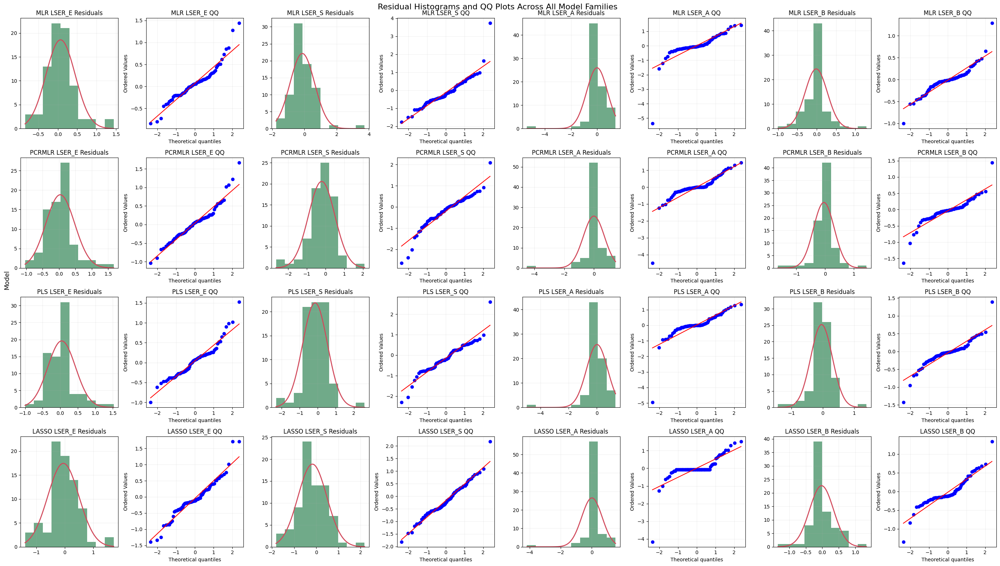
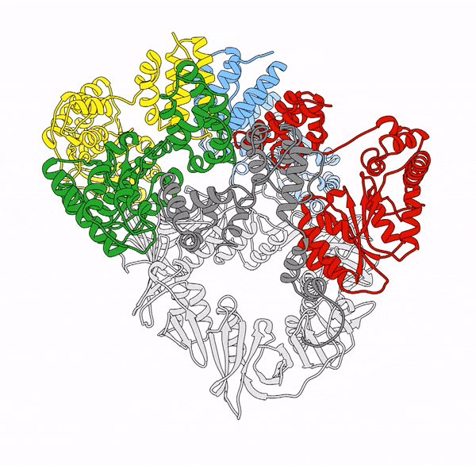

A selection of work encompassing machine learning, chemical engineering, and computational biology.

LSER Parameter Prediction for Chemicals
LSER models for estimating blood-to-vessel permeability for pharmaceutical molecules using a data-driven LSER pipeline and pharmaceutical-relevant clustering.

Computational Design of Dynamic Proteins
Ongoing work on dynamic protein structure design, with a focus on modeling conformational change beyond static-structure prediction.